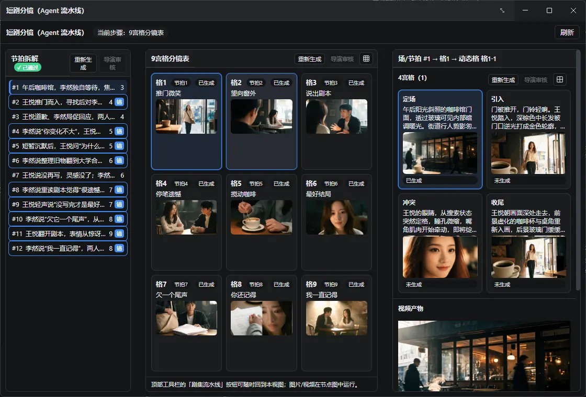
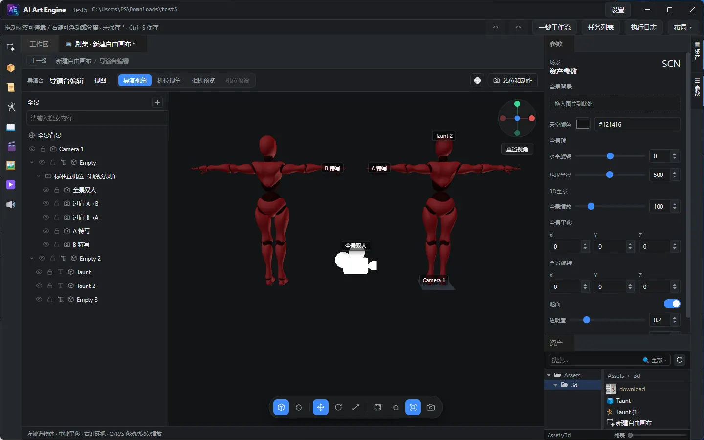
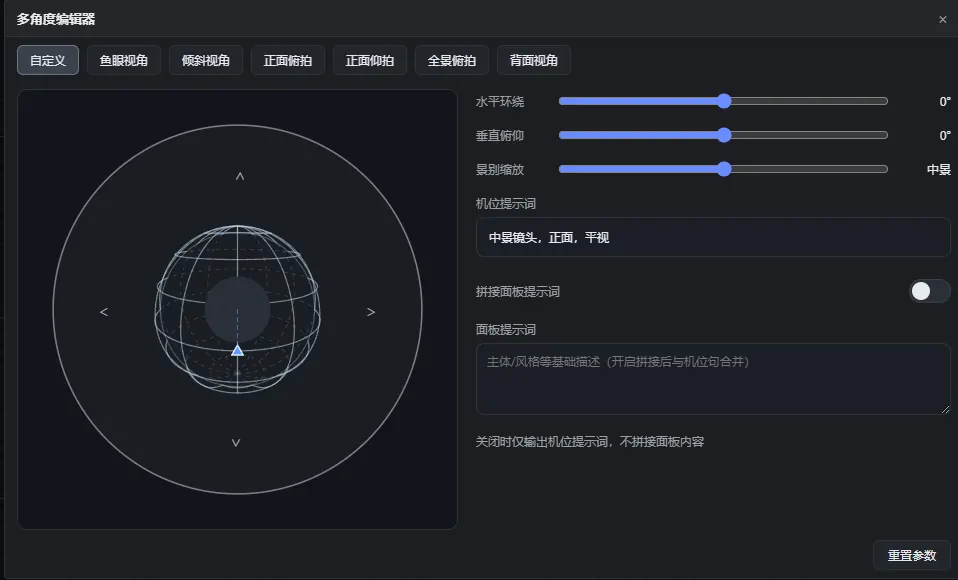
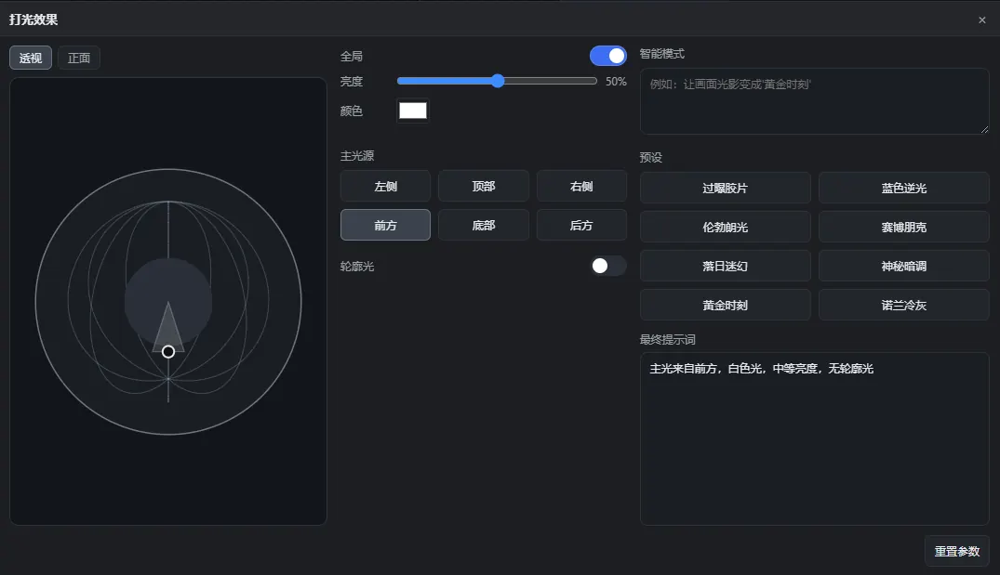
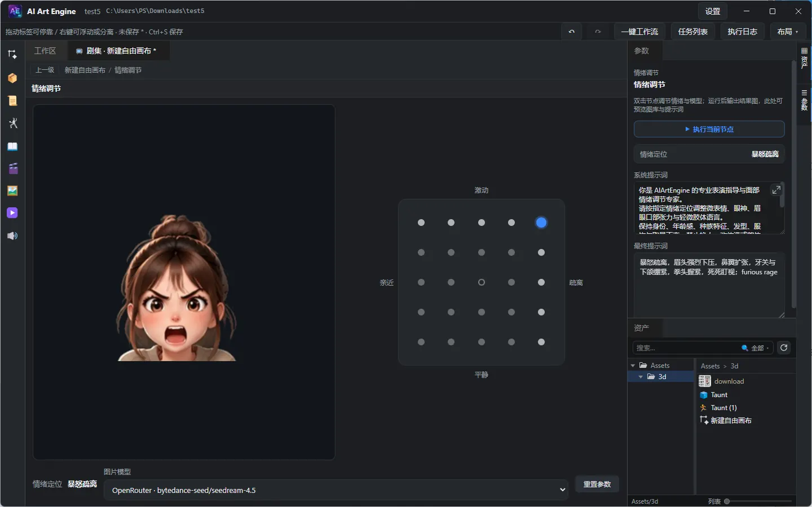
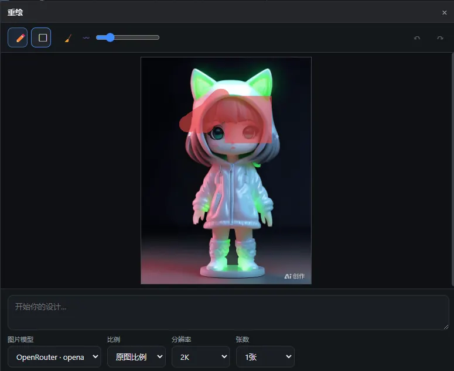
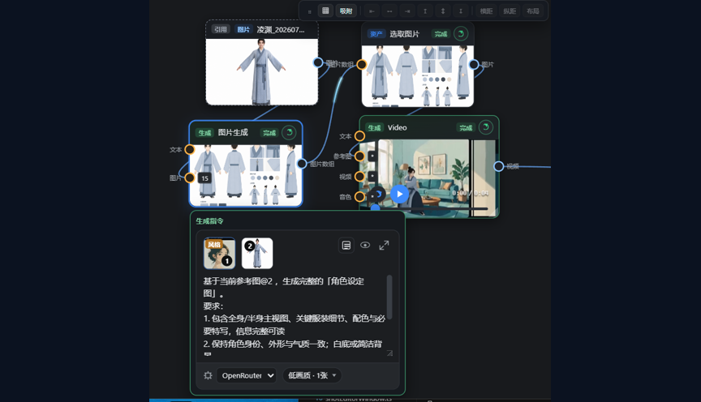
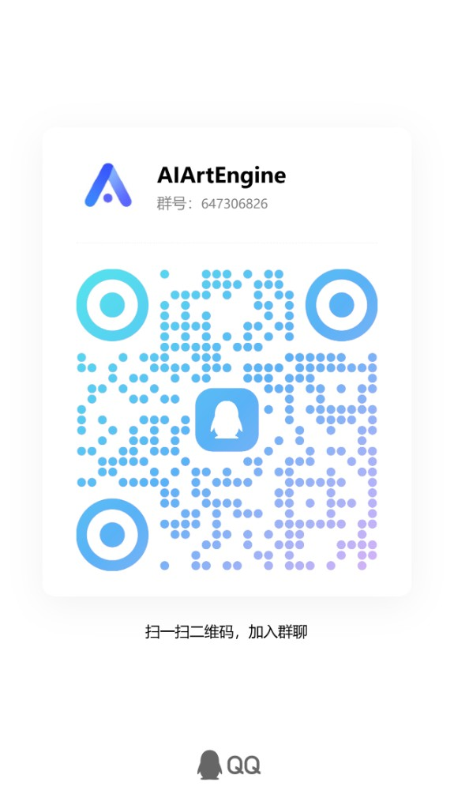

AI 对话面板
在对话里 @ 引用工程资产，让 Agent 调用 MCP 工具直接干活：生成图片 / 视频 / 3D /
语音、编辑节点图、运行工作流并查看状态。多会话历史，模型可选任意已配置的文本提供商。
AIArtEngine · 短剧 · 广告 · 成片
v5.0：内置 MCP 工具服务，Claude Code 等 AI Agent 可直接驱动应用；AI 对话面板在聊天中 @ 引用资产并调用生成工具；一键工作流覆盖 12+ 行业模板。工程在本机，模型用你的 Key。







从剧本与场到节点生成、导演台与成片时间线——短剧、广告与叙事成片同一套工作流；工程本地优先，不强制上云。 短剧分镜 Agent 流水线可一键生成完整节点图，并在流程窗口中集中完成 9宫格、4宫格、导演审核与动态视频。 内置 MCP 工具服务：应用内 AI 对话面板 @ 引用资产直接生成，Claude Code 等外部 Agent 也能在聊天里规划工作流、运行生成、读写节点图。
AI 不是只陪你聊天——它能真正动手干活：应用内聊天即可驱动生成与工作流，Claude Code 等外部 Agent 也能直连操作你的工程。
在对话里 @ 引用工程资产，让 Agent 调用 MCP 工具直接干活：生成图片 / 视频 / 3D /
语音、编辑节点图、运行工作流并查看状态。多会话历史，模型可选任意已配置的文本提供商。
内置 MCP Server：Claude Code / Codex 等外部 AI Agent 可经 stdio 桥或 HTTP 直连操作你的工程——规划并落盘工作流、运行生成、读写资产与节点图。token 跨重启持久复用、操作审计、并发闸门。
MCP 接入教程 →同一条生成链路：参考图 → 角色设定图 → 选取图片 → 视频生成。

图片、视频、音色以 GUID 引用，支持素材包导入导出。
节拍拆解、9宫格 / 4宫格分镜表与导演审核，把叙事节奏落到画面。
文本 / 图像 / 视频 / 音色 / 3D 模型节点；对接 OpenRouter、OpenAI、Google、火山方舟、可灵、MiniMax、通义千问、魔塔、ComfyUI、Meshy、Tripo、Rodin（Hyper3D）、Luma AI、Lux3D 等，并可配置多云对象存储。端口类型必须相同，选取节点只收列表口。
3D 摆姿与机位；支持 3D 模型输入端口；截取站位图、录制动作视频，经方形口接到下游生成。
导入与节点素材上轨编排，预览选中片段或整轨联播，导出成片。
短剧短视频模板自动生成 剧本 → 节拍 → 9宫格 → 拼图 → 4宫格 → 动态提示词 → 36 条视频； 「剧集流水线」窗口集中操作，阶段重生成后下游自动失效、一致补跑。
推送 v* 标签可由 GitHub Actions 自动构建多平台产物。Intel Mac 请下载文件名含
x64 的 dmg；Apple Silicon（M 系列）请选 arm64。
加入 QQ 群交流使用问题，或观看视频教程、发邮件联系。
